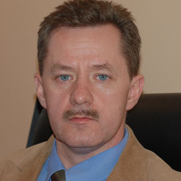
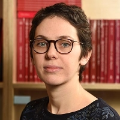

Джон Ф. Бейлин
Доклад: Russian Word Order and the Fate of Syntactic Theory

Аффилиация: Университет Стоуни-Брук
Текущая аффилиация: Профессор лингвистики, директор департамента лингвистики
Научные интересы: теоретический синтаксис, славянский синтаксис, музыкальная когниция, современная русская культура и общество.
Биография: Родом из Кембриджа, Массачусетс. Получил степень PhD в Корнеллском университете.
Образование и карьера:
- PhD по лингвистике, Корнеллский университет
- Продукт программ интенсивного изучения русского языка в Миддлбери Колледж и Ленинградском госуниверситете
- 2003: соучредитель NY-St. Petersburg Institute of Linguistics, Cognition and Culture
- 1994: основал American Language Center — первую программу интенсивного изучения английского языка для взрослых в России
- 2007-2009: руководил российскими институтами программы Critical Languages Scholarship Госдепартамента США
- 2010: создал Advanced Critical Language Institute (ACLI)
Профессиональная деятельность:
- Директор Russia Programs Network для системы Университета штата Нью-Йорк
- Проживает в Бруклине, Нью-Йорк
- Регулярный преподаватель на летних институтах Лингвистического общества Америки
|
Яцек Виткош
Доклад: Dative and accusative experiencers and anaphoric binding

Аффилиация: Университет Познани
Текущая аффилиация: Профессор гуманитарных наук, проректор Университета им. Адама Мицкевича в Познани
Научные интересы: английское языкознание, генеративная грамматика, синтаксис и морфология английского языка, сравнительный англо-польский синтаксис и морфология, синтаксис германских и славянских языков.
Биография: Родился 22 февраля 1963 года в Щецине. Польский филолог-англист, специализирующийся в области английского языкознания.
Образование и карьера:
- 1986: окончил политические науки в Институте политических наук и журналистики УАМ
- 1987: окончил английскую филологию в Институте английской филологии УАМ
- 1993: получил степень доктора гуманитарных наук на основе работы "Some Aspects of Phrasal Movement in English and Polish"
- 1998: получил степень доктора хабилитованного на основе диссертации "The Syntax of Clitics: Steps Toward a Minimalist Account"
- 2006: получил титул профессора гуманитарных наук
- 2010: назначен на должность ординарного профессора
Профессиональная деятельность:
- С 1988: работает в Институте английской филологии факультета неофилологии УАМ
- 2008-2016: проректор УАМ по науке и международному сотрудничеству
- С 2014: вице-председатель Santander Network
- Читал лекции в университетах Штутгарта, Тюбингена, Оттавы, Тромсё, Лейпцига, Берлина и Гёттингена
|
Лиза Былинина
Доклад: Typology of numerals and the number line

Аффилиация: Лейденский университет
Текущая аффилиация: Ассистент-профессор компьютерной лингвистики в Утрехтском университете
Научные интересы: теоретическая лингвистика, обработка естественного языка, семантика.
Образование и карьера:
- До сентября 2024: ассистент-профессор в Университете Гронингена, Центр языка и познания (CLCG)
- С сентября 2024: ассистент-профессор компьютерной лингвистики в Утрехтском университете
- Работает в группе Language and Communication, часть Института языковых наук
- Член специальной группы интересов NLP@U
Профессиональная деятельность:
- Преподает в магистерской программе Applied Data Science
- Преподает в бакалаврской программе Communication and Information Science
- Руководит исследовательскими магистерскими диссертациями в области data science, AI и теоретической лингвистики
- Специализируется на семантике в рамках теоретической лингвистики
|